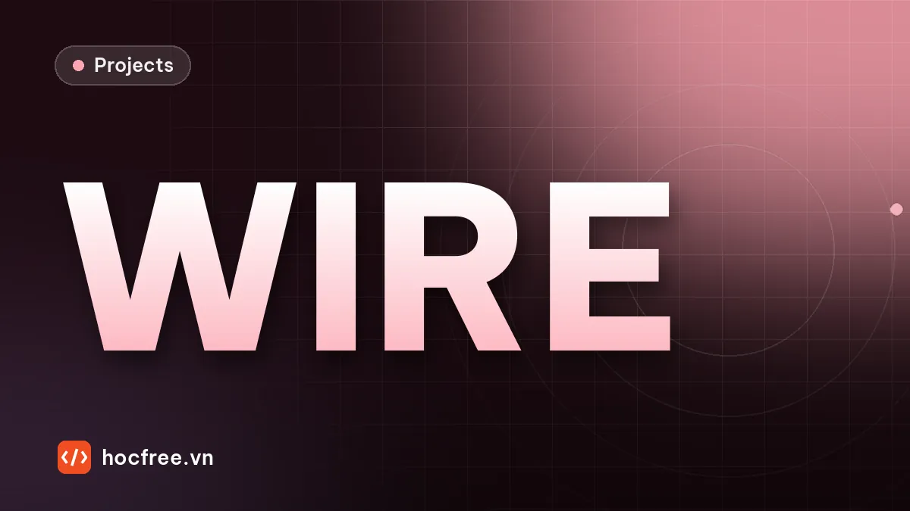

Dự án: kiểm tra thứ tự màu dây trong connector của bó dây điện
Trạm camera đọc màu 8 dây khi connector lệch, đèn đổi màu: đo đóng góp từng bước, bỏ vệt bóng, ΔE00 chặn màu lạ, mã lỗi cho PLC.

Nội dung bài viết
Độ khó: ★★★☆ (khó) · Cần học trước: chặng 3: Image Processing, chặng 6: Camera / Lens / Lighting · Thời lượng: khoảng 2,5 giờ
Bó dây điện (wire harness) có mặt trong mọi chiếc ô tô, máy giặt, tủ điện. Một lỗi rất hay gặp ở công đoạn bấm đầu là cắm dây sai vị trí trong connector: hai dây đổi chỗ cho nhau, cắm nhầm cuộn dây khác màu, hoặc sót một dây. Lỗi này không thấy được bằng đo thông mạch nếu hai đầu cùng sai giống nhau, và khi lọt tới khách hàng thì có thể làm chập một mô-đun điện tử. Dự án này xây một trạm kiểm tra thứ tự màu dây bằng camera màu, và qua từng bước cho thấy bằng số vì sao cách làm "lấy màu trung bình trong một ô cố định" thất bại ở nhà máy.
1. Bài toán
Email của trưởng xưởng bó dây:
"Chuyền bấm đầu connector 8 chân mã DH-08A tuần trước lọt hai bộ dây đảo chân 6 và 7 (xanh dương và cam), khách hàng trả về cả lô. Công nhân kiểm bằng mắt cuối ca nên mỏi và sót. Cần một trạm camera đặt sau máy bấm: mỗi bộ dây chụp một ảnh, báo OK/NG cho PLC trong 300 ms, NG thì ghi rõ chân nào sai. Xưởng có cửa sổ, đèn trần thay thường xuyên, các cuộn dây mua từ hai nhà cung cấp nên màu hơi khác nhau."
| Đại lượng | Yêu cầu |
|---|---|
| Công thức DH-08A (chân 1 → 8) | đỏ, đen, trắng, xanh lá, vàng, xanh dương, cam, nâu |
| Lỗi phải bắt | đảo hai dây kề nhau, sai màu (cả màu có và không có trong công thức), thiếu dây |
| Lọt lỗi (escape) | 0 trên bộ thử |
| Loại nhầm (overkill) | ≤ 2% số bộ dây tốt |
| Thời gian xử lý | ≤ 300 ms/bộ |
| Đầu ra | OK/NG, mã loại lỗi cho PLC, chân sai, log JSON |
2. Yêu cầu
- Không giả định connector luôn nằm đúng chỗ: đồ gá cho phép lệch ±25 pixel, xoay ±6°.
- Kết quả không đổi khi đèn yếu đi 25% hay ngả màu: dùng thẻ xám cố định trong trường nhìn.
- Vỏ dây nhựa bóng tạo vệt sáng dọc dây: vệt này không được làm sai màu.
- Màu dạy từ ảnh mẫu thật của trạm, không lấy từ bảng màu của nhà sản xuất dây.
- Khi không chắc, trạm phải nói "không chắc" để đưa ra kiểm tra bằng mắt, không được đoán.
- Tự kiểm tra tham chiếu màu (thẻ xám) mỗi ảnh; tham chiếu hỏng thì dừng đo, không phán OK/NG.
3. Kiến thức sử dụng
- Kiểm tra màu: Lab, ΔE2000, cân bằng trắng: toàn bộ phần đo màu; hàm
de2000lấy nguyên từ bài này. - Nhiễu, SNR và flat-field: vì sao làm việc trên ảnh tuyến tính (gamma = 1).
- Morphology và blob analysis: tách thân connector,
minAreaRectlấy vị trí và góc. - Biến đổi hình học: lấy mẫu trong hệ tọa độ gắn với vật.
- Escape và overkill: cách đánh giá một trạm kiểm tra.
4. Dữ liệu: trạm mô phỏng
Bộ mô phỏng dưới đây đóng vai trạm thật: camera màu đã tắt gamma (ảnh tuyến tính), khay sáng màu trung tính, thẻ xám 18% gắn cố định ở góc ảnh, connector đen với 8 dây chạy xuống. Mỗi ảnh có các biến động của xưởng: connector lệch và xoay, đèn yếu đi tới 25% hoặc mạnh lên, màu đèn thay đổi, màu vỏ dây khác lô khoảng 4%, và một vệt bóng sáng dọc mỗi dây. Khoảng 14% số bộ dây có lỗi: đảo hai dây kề nhau, sai sang màu dễ nhầm (đỏ và cam, nâu và đỏ, xanh dương và tím…), hoặc thiếu dây.
import cv2
import numpy as np
MAU_SRGB = {"đen": (30, 30, 30), "nâu": (110, 60, 35), "đỏ": (200, 30, 30), "cam": (235, 120, 30),
"vàng": (240, 210, 40), "xanh lá": (40, 150, 60), "xanh dương": (40, 80, 190), "tím": (120, 60, 160),
"xám": (130, 130, 130), "trắng": (225, 225, 220)} # (R, G, B) màu vỏ dây danh định
def srgb_sang_tuyen_tinh(rgb):
c = np.asarray(rgb, float) / 255
return np.where(c <= 0.04045, c / 12.92, ((c + 0.055) / 1.055) ** 2.4)
MAU_TT = {k: srgb_sang_tuyen_tinh(v)[::-1] for k, v in MAU_SRGB.items()} # tuyến tính, thứ tự B, G, R
CONG_THUC = {"DH-08A": ["đỏ", "đen", "trắng", "xanh lá", "vàng", "xanh dương", "cam", "nâu"]}
NHAM_GAN = [("đỏ", "cam"), ("nâu", "đỏ"), ("vàng", "cam"), ("xanh dương", "tím"), ("xám", "trắng"), ("đen", "nâu")]
H, W, BUOC, SO_CHAN = 480, 640, 40, 8
def tao_bo_day(ma, rng, ty_le_loi=0.14):
"""Trả về (danh sách màu thật theo chân, loại lỗi). Lỗi: đảo hai dây kề nhau, sai màu gần giống, thiếu dây."""
mau = list(CONG_THUC[ma])
loi = "OK"
r = rng.random()
if r < ty_le_loi * 0.45:
i = rng.integers(0, SO_CHAN - 1)
mau[i], mau[i + 1] = mau[i + 1], mau[i]
loi = "đảo dây"
elif r < ty_le_loi * 0.8:
i = rng.integers(0, SO_CHAN)
cap = [b if a == mau[i] else a for a, b in NHAM_GAN if mau[i] in (a, b)]
if cap:
mau[i] = cap[rng.integers(0, len(cap))]
loi = "sai màu"
elif r < ty_le_loi:
mau[rng.integers(0, SO_CHAN)] = None
loi = "thiếu dây"
return mau, loi
def chup(mau_chan, rng, danh_dinh=False):
"""Ảnh tuyến tính BGR float32: khay sáng, thẻ xám cố định, đầu connector đen có thể lệch, xoay; dây chạy xuống dưới.
danh_dinh=True: đúng vị trí, đúng đèn như lúc cài đặt (dùng để dạy màu mẫu)."""
nen = np.full((H, W, 3), 0.35, np.float32)
nen[20:80, 20:80] = 0.18 # thẻ xám trung tính
ve = np.zeros((H, W, 3), np.float32)
mat_na = np.zeros((H, W), np.float32)
cx, cy = (320, 170) if danh_dinh else (320 + rng.uniform(-25, 25), 170 + rng.uniform(-15, 15))
goc = 0.0 if danh_dinh else rng.uniform(-6, 6)
M = cv2.getRotationMatrix2D((cx, cy), goc, 1.0)
phan = np.zeros((H, W), np.uint8)
cv2.rectangle(phan, (int(cx - 180), int(cy - 50)), (int(cx + 180), int(cy + 20)), 255, -1) # thân connector
than = cv2.warpAffine(phan, M, (W, H)) > 0
for k, m in enumerate(mau_chan):
if m is None:
continue
x = cx - (SO_CHAN - 1) / 2 * BUOC + k * BUOC
lop = np.zeros((H, W), np.uint8)
cv2.rectangle(lop, (int(x - 10), int(cy + 20)), (int(x + 10), int(cy + 170)), 255, -1)
day = cv2.warpAffine(lop, M, (W, H)) > 0
mau = MAU_TT[m] * (1 + rng.normal(0, 0.04, 3)) # khác lô vỏ dây
ve[day] = mau
mat_na[day] = 1
bong = np.zeros((H, W), np.uint8) # vệt bóng dọc giữa dây (vỏ nhựa bóng)
cv2.rectangle(bong, (int(x - 2), int(cy + 25)), (int(x + 1), int(cy + 165)), 255, -1)
ve[cv2.warpAffine(bong, M, (W, H)) > 0] = 0.95
anh = np.where(mat_na[..., None] > 0, ve, nen)
anh[than] = 0.04
if not danh_dinh:
do_sang = rng.uniform(0.75, 1.15) # đèn yếu dần, khác ca
den = np.array([rng.uniform(0.88, 1.06), 1.0, rng.uniform(0.94, 1.10)], np.float32) # màu đèn: B, G, R
anh = anh * do_sang * den
return np.clip(anh + rng.normal(0, 0.006, anh.shape), 0, 1).astype(np.float32)
rng = np.random.default_rng(0)
mau, loi = tao_bo_day("DH-08A", rng)
anh = chup(mau, rng)
cv2.imwrite("mau_day.png", np.uint8(255 * np.clip(anh, 0, 1) ** (1 / 2.2))) # gamma 2,2 chỉ để xem bằng mắt
print(loi, mau)
print("ảnh", anh.shape, anh.dtype, f"[{anh.min():.2f}, {anh.max():.2f}]")OK ['đỏ', 'đen', 'trắng', 'xanh lá', 'vàng', 'xanh dương', 'cam', 'nâu']
ảnh (480, 640, 3) float32 [0.00, 1.00]Mở mau_day.png để xem ảnh (ảnh lưu đã áp gamma 2,2 để nhìn bằng mắt cho giống thật; thuật toán làm việc trên ảnh tuyến tính). Thay ảnh mô phỏng bằng ảnh thật của bạn là đủ để chạy toàn bộ phần sau, với điều kiện ảnh thật cũng tuyến tính và có thẻ xám.
5. Lời giải 1: ô lấy mẫu cố định
Cách mà hầu hết người mới (và nhiều công cụ "kéo thả") làm: đặt 8 ô lấy mẫu ở vị trí danh định, lấy màu trung bình BGR trong mỗi ô, so với màu dạy từ ảnh mẫu, chọn màu gần nhất.
# Lời giải 1: ROI cố định theo vị trí danh định, màu trung bình BGR, so khoảng cách với màu dạy
def vung_co_dinh(anh, k):
x = int(320 - (SO_CHAN - 1) / 2 * BUOC + k * BUOC)
return anh[230:290, x - 6:x + 7].reshape(-1, 3)
mau_day_1 = {}
for _ in range(5): # dạy: 5 ảnh mẫu đúng vị trí, đúng đèn
a = chup(CONG_THUC["DH-08A"], rng, danh_dinh=True)
for k, m in enumerate(CONG_THUC["DH-08A"]):
mau_day_1.setdefault(m, []).append(vung_co_dinh(a, k).mean(0))
mau_day_1 = {m: np.mean(v, axis=0) for m, v in mau_day_1.items()}
def doc_mau_1(anh):
kq = []
for k in range(SO_CHAN):
tb = vung_co_dinh(anh, k).mean(0)
kq.append(min(mau_day_1, key=lambda m: np.linalg.norm(tb - mau_day_1[m])))
return kqTrên ảnh mẫu, cách này đọc đúng 100%. Câu hỏi là nó chịu được bao nhiêu biến động của xưởng; phần 7 sẽ đo.
6. Lời giải 2: bốn bước làm cho phép đo màu bền
- Căn theo connector: tìm thân connector (vùng tối lớn nhất, dùng opening với phần tử 61×31 để bỏ các dây đen mảnh dính vào thân), lấy tâm và góc bằng
minAreaRect, rồi lấy mẫu từng dây trong hệ tọa độ gắn với connector. - Cân bằng trắng theo thẻ xám ở góc ảnh: mỗi kênh nhân hệ số để thẻ về đúng 18%.
- Bỏ vệt bóng: loại pixel có kênh nào vượt 0,6 (sau cân bằng trắng), rồi lấy trung vị thay vì trung bình.
- Lab và ΔE00, có vùng "không chắc": đổi sang Lab, tính ΔE00 tới mọi màu đã dạy (thêm lớp "trống" là màu khay, để nhận ra thiếu dây). Chỉ chấp nhận khi màu gần nhất có ΔE ≤ 10 và cách màu thứ hai ít nhất 2 đơn vị; ngược lại trả "?".
def de2000(lab1, lab2):
"""CIEDE2000, giống bài kiểm tra màu (đã kiểm chứng với dữ liệu Sharma)."""
L1, a1, b1 = np.moveaxis(np.asarray(lab1, float), -1, 0)
L2, a2, b2 = np.moveaxis(np.asarray(lab2, float), -1, 0)
C_tb = (np.hypot(a1, b1) + np.hypot(a2, b2)) / 2
G = 0.5 * (1 - np.sqrt(C_tb ** 7 / (C_tb ** 7 + 25.0 ** 7)))
a1p, a2p = (1 + G) * a1, (1 + G) * a2
C1p, C2p = np.hypot(a1p, b1), np.hypot(a2p, b2)
h1p, h2p = np.degrees(np.arctan2(b1, a1p)) % 360, np.degrees(np.arctan2(b2, a2p)) % 360
dh = h2p - h1p
dh = np.where(dh > 180, dh - 360, np.where(dh < -180, dh + 360, dh))
dh = np.where(C1p * C2p == 0, 0, dh)
dL, dC = L2 - L1, C2p - C1p
dH = 2 * np.sqrt(C1p * C2p) * np.sin(np.radians(dh / 2))
L_tb, Cp_tb, tong_h = (L1 + L2) / 2, (C1p + C2p) / 2, h1p + h2p
h_tb = np.where(C1p * C2p == 0, tong_h, np.where(np.abs(h1p - h2p) <= 180, tong_h / 2,
np.where(tong_h < 360, (tong_h + 360) / 2, (tong_h - 360) / 2)))
T = (1 - 0.17 * np.cos(np.radians(h_tb - 30)) + 0.24 * np.cos(np.radians(2 * h_tb))
+ 0.32 * np.cos(np.radians(3 * h_tb + 6)) - 0.20 * np.cos(np.radians(4 * h_tb - 63)))
SL = 1 + 0.015 * (L_tb - 50) ** 2 / np.sqrt(20 + (L_tb - 50) ** 2)
SC, SH = 1 + 0.045 * Cp_tb, 1 + 0.015 * Cp_tb * T
RT = -np.sin(np.radians(60 * np.exp(-((h_tb - 275) / 25) ** 2))) * 2 * np.sqrt(Cp_tb ** 7 / (Cp_tb ** 7 + 25.0 ** 7))
return np.sqrt((dL / SL) ** 2 + (dC / SC) ** 2 + (dH / SH) ** 2 + RT * (dC / SC) * (dH / SH))
def tim_connector(anh):
"""Trả về (tâm, góc, hướng dọc thân u, hướng xuống v) của thân connector."""
xam = anh.mean(axis=2)
toi = (xam < 0.5 * np.median(xam)).astype(np.uint8)
toi = cv2.morphologyEx(toi, cv2.MORPH_OPEN, cv2.getStructuringElement(cv2.MORPH_RECT, (61, 31))) # bỏ dây đen mảnh
n, nhan, st, _ = cv2.connectedComponentsWithStats(toi)
lon = 1 + np.argmax(st[1:, cv2.CC_STAT_AREA])
(cx, cy), (w, h), goc = cv2.minAreaRect(np.column_stack(np.nonzero(nhan == lon))[:, ::-1].astype(np.float32))
if w < h: # đưa về: cạnh dài là chiều ngang
goc -= 90
u = np.array([np.cos(np.radians(goc)), np.sin(np.radians(goc))])
if u[0] < 0: # chân 1 luôn ở bên trái ảnh
u = -u
v = np.array([-u[1], u[0]]) # vuông góc, hướng xuống phía dây
return np.array([cx, cy]), u, v
def vung_theo_connector(anh, tam, u, v, k):
"""Lấy mẫu một mảng 13 × 60 pixel trên dây thứ k, trong hệ tọa độ gắn với connector."""
du, dv = np.meshgrid(np.arange(-6, 7), np.arange(75, 135))
p = tam + ((k - (SO_CHAN - 1) / 2) * BUOC + du[..., None]) * u + dv[..., None] * v
return anh[np.round(p[..., 1]).astype(int).clip(0, H - 1), np.round(p[..., 0]).astype(int).clip(0, W - 1)].reshape(-1, 3)
def can_bang_trang(anh):
return anh * (0.18 / anh[25:75, 25:75].reshape(-1, 3).mean(0)) # thẻ xám phản xạ 18% ở góc ảnhLớp dưới gói cả bốn bước, có cờ bật/tắt từng bước để đo đóng góp của mỗi bước. Màu mẫu luôn được dạy lại theo đúng chuỗi xử lý đang dùng, để so sánh công bằng.
def lay_mau_chan(anh, k, can=True):
"""Pixel của dây thứ k: theo vị trí connector tìm được (can=True) hoặc theo vị trí danh định."""
if can:
tam, u, v = tim_connector(anh)
return vung_theo_connector(anh, tam, u, v, k)
return vung_co_dinh(anh, k)
def dac_trung(diem, lab, bo_bong):
if bo_bong:
giu = diem[diem.max(axis=1) < 0.6]
diem = giu if len(giu) >= 0.3 * len(diem) else diem
tb = np.median(diem, axis=0)
else:
tb = diem.mean(axis=0)
return cv2.cvtColor(tb.astype(np.float32)[None, None], cv2.COLOR_LBGR2Lab)[0, 0] if lab else tb
class BoDocMau:
"""Bộ đọc màu dây; bật/tắt từng bước để thấy mỗi bước đóng góp bao nhiêu."""
def __init__(self, can=True, wb=True, lab=True, bo_bong=True, nguong=10.0, khoang_cach=2.0):
self.can, self.wb, self.lab, self.bo_bong = can, wb, lab, bo_bong
self.nguong, self.khoang_cach = nguong, khoang_cach
mau = {}
rng_day = np.random.default_rng(100)
for _ in range(5): # dạy từ 5 ảnh mẫu, đúng vị trí, đúng đèn
a = self.chuan_bi(chup(CONG_THUC["DH-08A"], rng_day, danh_dinh=True))
for k, m in enumerate(CONG_THUC["DH-08A"]):
mau.setdefault(m, []).append(dac_trung(lay_mau_chan(a, k, self.can), self.lab, self.bo_bong))
mau.setdefault("trống", []).append(dac_trung(a[400:460, 200:440].reshape(-1, 3), self.lab, self.bo_bong))
self.mau = {m: np.mean(v, axis=0) for m, v in mau.items()}
def chuan_bi(self, anh):
return can_bang_trang(anh) if self.wb else anh
def khoang(self, f, ref):
return float(de2000(f, ref)) if self.lab else float(np.linalg.norm(f - ref))
def doc(self, anh):
a = self.chuan_bi(anh)
if self.can:
tam, u, v = tim_connector(a)
kq = []
for k in range(SO_CHAN):
diem = vung_theo_connector(a, tam, u, v, k) if self.can else vung_co_dinh(a, k)
f = dac_trung(diem, self.lab, self.bo_bong)
d = {m: self.khoang(f, ref) for m, ref in self.mau.items()}
tot, nhi = sorted(d, key=d.get)[:2]
chac = not self.lab or (d[tot] <= self.nguong and d[nhi] - d[tot] >= self.khoang_cach)
kq.append(tot if chac else "?")
return kq7. Mỗi bước đóng góp bao nhiêu
Đánh giá trên 300 bộ dây (khoảng 14% có lỗi), trạm báo OK chỉ khi đọc đúng nguyên công thức. Chạy khoảng một phút.
def danh_gia(ham, so_bo=300, seed=7):
"""Chạy trên so_bo bộ dây (có lỗi xen kẽ). Trạm báo OK khi đọc đúng nguyên công thức, ngược lại NG."""
rng_dg = np.random.default_rng(seed)
dem = {"lọt": 0, "loại nhầm": 0, "bắt đúng lỗi": 0, "OK đúng": 0}
nham_chan = 0
for _ in range(so_bo):
mau, loi = tao_bo_day("DH-08A", rng_dg)
doc = ham(chup(mau, rng_dg))
bao_ok = doc == CONG_THUC["DH-08A"]
nham_chan += sum(d != (t or "trống") for d, t in zip(doc, mau))
if loi == "OK":
dem["OK đúng" if bao_ok else "loại nhầm"] += 1
else:
dem["lọt" if bao_ok else "bắt đúng lỗi"] += 1
return dem, nham_chan / (so_bo * SO_CHAN)
CAU_HINH = {
"1. ROI cố định, BGR, trung bình": dict(can=False, wb=False, lab=False, bo_bong=False),
"2. + căn theo connector": dict(can=True, wb=False, lab=False, bo_bong=False),
"3. + cân bằng trắng thẻ xám": dict(can=True, wb=True, lab=False, bo_bong=False),
"4. + bỏ vệt bóng, lấy trung vị": dict(can=True, wb=True, lab=False, bo_bong=True),
"5. + Lab, ΔE00, vùng không chắc": dict(can=True, wb=True, lab=True, bo_bong=True),
}
print(f"{'cấu hình':34s} | lọt | loại nhầm | chân đọc sai")
for ten, ch in CAU_HINH.items():
dem, ty_le = danh_gia(BoDocMau(**ch).doc)
print(f"{ten:34s} | {dem['lọt']:3d} | {dem['loại nhầm']:9d} | {ty_le:6.1%}")
print(f"(300 bộ dây: {dem['OK đúng'] + dem['loại nhầm']} bộ tốt, {dem['lọt'] + dem['bắt đúng lỗi']} bộ lỗi)")cấu hình | lọt | loại nhầm | chân đọc sai
1. ROI cố định, BGR, trung bình | 0 | 251 | 72.8%
2. + căn theo connector | 0 | 236 | 18.6%
3. + cân bằng trắng thẻ xám | 0 | 258 | 14.0%
4. + bỏ vệt bóng, lấy trung vị | 0 | 0 | 0.1%
5. + Lab, ΔE00, vùng không chắc | 0 | 5 | 0.3%
(300 bộ dây: 260 bộ tốt, 40 bộ lỗi)- Ô cố định đọc sai 73% số chân: connector lệch vài chục pixel là ô lấy mẫu rơi vào nền hoặc dây bên cạnh. Mọi cách xử lý màu phía sau đều vô ích nếu lấy mẫu sai chỗ.
- Căn theo connector giảm xuống 19% nhưng vẫn loại nhầm gần hết bộ tốt. Cân bằng trắng giúp thêm một chút.
- Bỏ vệt bóng là bước quyết định: từ 14% xuống 0,1% số chân đọc sai. Vệt bóng gần trắng chiếm khoảng 30% số pixel trong ô lấy mẫu (rộng 4 trên 13 pixel), kéo trung bình của mọi màu về phía trắng; trung vị của phần còn lại thì gần như không bị ảnh hưởng. Đây là lý do bài kiểm tra màu nhấn mạnh vùng đo phải tránh chói.
- Lab, ΔE00 và vùng không chắc không giảm thêm lỗi đọc trên bộ lỗi này, thậm chí thêm vài ca "không chắc" (bị tính là loại nhầm vì phải đưa ra kiểm bằng mắt). Vậy nó dùng để làm gì? Câu trả lời ở phần sau.
Không cấu hình nào để lọt lỗi: lỗi đảo dây hay sai màu làm thứ tự đọc được khác công thức, nên kể cả bộ đọc tệ cũng báo NG. Với trạm kiểm tra thứ tự, nguy cơ lớn hơn nằm ở chỗ khác.
8. Màu lạ không có trong công thức
Nhà cung cấp giao nhầm một cuộn dây màu khác, ví dụ xanh ngọc thay cho xanh lá, hoặc tím thay cho xanh dương. Bộ đọc "chọn màu gần nhất" luôn trả về một màu trong danh sách đã dạy, nên rất có thể nó gọi xanh ngọc là "xanh lá" và cho qua.
# Màu lạ: nhà cung cấp giao nhầm cuộn dây có màu không có trong công thức
MAU_TT["hồng"] = srgb_sang_tuyen_tinh((230, 110, 150))[::-1]
MAU_TT["xanh ngọc"] = srgb_sang_tuyen_tinh((30, 150, 150))[::-1]
bo_doc = {"4. BGR, màu gần nhất": BoDocMau(lab=False), "5. Lab, ΔE00, vùng không chắc": BoDocMau()}
for mau_la, vi_tri in (("hồng", 0), ("xanh ngọc", 3), ("tím", 5)):
rng_la = np.random.default_rng(11)
for ten, bd in bo_doc.items():
lot = 0
for _ in range(50):
mau = list(CONG_THUC["DH-08A"])
mau[vi_tri] = mau_la # thay đúng một dây bằng màu lạ
lot += bd.doc(chup(mau, rng_la)) == CONG_THUC["DH-08A"]
print(f"dây {mau_la:9s} thay cho {CONG_THUC['DH-08A'][vi_tri]:9s} | {ten:30s}: lọt {lot}/50")dây hồng thay cho đỏ | 4. BGR, màu gần nhất : lọt 0/50
dây hồng thay cho đỏ | 5. Lab, ΔE00, vùng không chắc : lọt 0/50
dây xanh ngọc thay cho xanh lá | 4. BGR, màu gần nhất : lọt 49/50
dây xanh ngọc thay cho xanh lá | 5. Lab, ΔE00, vùng không chắc : lọt 0/50
dây tím thay cho xanh dương | 4. BGR, màu gần nhất : lọt 50/50
dây tím thay cho xanh dương | 5. Lab, ΔE00, vùng không chắc : lọt 0/50Đây là rủi ro thật của mọi bài toán phân loại "tập đóng": thế giới thật có những lớp mà lúc dạy không có. Dây hồng khác đỏ đủ xa nên cả hai cách đều bắt. Nhưng xanh ngọc gần xanh lá và tím gần xanh dương: cách chọn màu gần nhất cho lọt 49 đến 50 trên 50 bộ, tức lọt gần như toàn bộ. Ngưỡng ΔE00 biến câu hỏi từ "giống màu nào nhất?" thành "có đủ giống màu nào không?", và chặn được cả hai. Cái giá là vài ca "không chắc" trên hàng tốt, một cái giá rất rẻ so với một lô bị trả về.
9. Tích hợp: mã lỗi cho PLC và log
PLC chỉ cần một con số; bộ phận chất lượng cần biết chân nào sai và trạm đã đọc thấy gì. Hàm dưới phân loại lỗi và xuất một bản ghi JSON cho mỗi bộ dây.
import json
MA_LOI = {"OK": 0, "đảo dây": 1, "sai màu": 2, "thiếu dây": 3, "không chắc": 4} # gửi PLC một thanh ghi
def phan_loai_loi(doc, cong_thuc):
sai = [k for k, (d, c) in enumerate(zip(doc, cong_thuc)) if d != c]
if not sai:
return "OK", sai
if "?" in doc:
return "không chắc", sai # đưa ra bàn kiểm tra bằng mắt, không tự kết luận
if "trống" in doc:
return "thiếu dây", sai
if len(sai) == 2 and sai[1] == sai[0] + 1 and doc[sai[0]] == cong_thuc[sai[1]] and doc[sai[1]] == cong_thuc[sai[0]]:
return "đảo dây", sai
return "sai màu", sai
bo_doc_chuan = BoDocMau()
def kiem_tra_bo_day(anh, ma, so_seri):
doc = bo_doc_chuan.doc(anh)
loi, chan = phan_loai_loi(doc, CONG_THUC[ma])
return {"seri": so_seri, "ma": ma, "ket_qua": "OK" if loi == "OK" else "NG", "loai_loi": loi,
"ma_loi_plc": MA_LOI[loi], "chan_sai": [k + 1 for k in chan], "doc_duoc": doc}
rng_tt = np.random.default_rng(5)
for i in range(1, 40):
mau, loi = tao_bo_day("DH-08A", rng_tt)
if loi != "OK":
print(f"(lỗi mô phỏng: {loi})")
print(json.dumps(kiem_tra_bo_day(chup(mau, rng_tt), "DH-08A", f"H{i:05d}"), ensure_ascii=False))(lỗi mô phỏng: đảo dây)
{"seri": "H00005", "ma": "DH-08A", "ket_qua": "NG", "loai_loi": "đảo dây", "ma_loi_plc": 1, "chan_sai": [2, 3], "doc_duoc": ["đỏ", "trắng", "đen", "xanh lá", "vàng", "xanh dương", "cam", "nâu"]}
(lỗi mô phỏng: sai màu)
{"seri": "H00009", "ma": "DH-08A", "ket_qua": "NG", "loai_loi": "không chắc", "ma_loi_plc": 4, "chan_sai": [6], "doc_duoc": ["đỏ", "đen", "trắng", "xanh lá", "vàng", "?", "cam", "nâu"]}
(lỗi mô phỏng: sai màu)
{"seri": "H00013", "ma": "DH-08A", "ket_qua": "NG", "loai_loi": "không chắc", "ma_loi_plc": 4, "chan_sai": [3], "doc_duoc": ["đỏ", "đen", "?", "xanh lá", "vàng", "xanh dương", "cam", "nâu"]}
(lỗi mô phỏng: đảo dây)
{"seri": "H00015", "ma": "DH-08A", "ket_qua": "NG", "loai_loi": "đảo dây", "ma_loi_plc": 1, "chan_sai": [6, 7], "doc_duoc": ["đỏ", "đen", "trắng", "xanh lá", "vàng", "cam", "xanh dương", "nâu"]}
(lỗi mô phỏng: sai màu)
{"seri": "H00039", "ma": "DH-08A", "ket_qua": "NG", "loai_loi": "sai màu", "ma_loi_plc": 2, "chan_sai": [8], "doc_duoc": ["đỏ", "đen", "trắng", "xanh lá", "vàng", "xanh dương", "cam", "đen"]}Hai bộ dây sai màu được báo "không chắc" (mã 4) thay vì "sai màu": màu đọc được không đủ giống màu nào, nên trạm không đoán mà chuyển ra bàn kiểm tra. Mã lỗi riêng cho "không chắc" quan trọng: nếu tỉ lệ mã 4 tăng dần trong ca, nhiều khả năng là đèn hay thẻ xám có vấn đề, không phải công nhân bấm sai (xem bài tập 2). Gửi mã lỗi qua Modbus như bài Modbus TCP; lưu bản ghi vào SQLite như bài lưu kết quả, kèm ảnh của mọi bộ NG.
10. Bẫy thực tế
| Bẫy | Hậu quả | Cách tránh |
|---|---|---|
| Camera bật auto white balance, auto exposure | Màu đo thay đổi theo nội dung ảnh, dạy hôm nay mai sai | Tắt hết chế độ tự động, tắt gamma, cố định gain |
| Dạy màu từ một cuộn dây duy nhất | Cuộn của nhà cung cấp thứ hai bị báo "không chắc" hàng loạt | Dạy từ mẫu của mọi nhà cung cấp; theo dõi ΔE trung bình mỗi màu theo lô |
| Dây có sọc (xanh lá–vàng tiếp địa) | Trung vị một ô cho ra màu trung gian | Lấy mẫu dọc dây và đếm tỉ lệ hai màu, hoặc dạy riêng lớp "sọc" |
| Đèn chiếu thẳng lên vỏ nhựa bóng | Vệt bóng lớn, có dây gần như trắng hoàn toàn | Đèn dome hoặc khuếch tán, phân cực chéo (bài kính lọc và phân cực) |
| Thẻ xám bị bẩn, phai màu, bị che | Cân bằng trắng sai, mọi màu lệch theo | Kiểm tra thẻ mỗi ảnh (bài tập 2), thay thẻ định kỳ |
| Đổi mã sản phẩm mà quên đổi công thức | NG hàng loạt, hoặc tệ hơn là OK hàng loạt nếu hai mã gần giống | Đọc mã từ MES hoặc mã vạch trên bó dây, không để công nhân chọn tay |
11. Tự đánh giá
- Trên bộ thử 300 bộ dây: 0 lọt, loại nhầm ≤ 2% số bộ tốt (lời giải cuối: 5 bộ "không chắc" trên khoảng 260 bộ tốt, dưới 2%).
- Màu lạ ngoài công thức: 0 lọt.
- Thẻ xám hỏng thì trạm dừng đo chứ không phán bừa.
- Mọi bộ NG có log đủ để tìm nguyên nhân: chân sai, màu đọc được, loại lỗi.
- Thời gian xử lý: đo bằng
time.perf_counter()quanhkiem_tra_bo_daytrên máy trạm; phần nặng nhất làmorphologyExtrên toàn ảnh, có thể giới hạn vào vùng quanh connector nếu cần nhanh hơn.
Bài tập
Bài 1. Chọn ngưỡng ΔE bằng dữ liệu
Thử ngưỡng ΔE 5, 10, 20 và khoảng cách tối thiểu 0, 2. Với mỗi cặp, đo số bộ tốt bị loại nhầm (150 bộ) và số bộ màu lạ bị lọt (50 bộ). Chọn cặp nào?
Xem đáp án
def thu_nguong(nguong, khoang_cach, so_bo=150):
bd = BoDocMau(nguong=nguong, khoang_cach=khoang_cach)
dem, _ = danh_gia(bd.doc, so_bo=so_bo)
rng_la = np.random.default_rng(12)
lot = 0
for mau_la, vi_tri in (("xanh ngọc", 3), ("tím", 5)):
for _ in range(25):
mau = list(CONG_THUC["DH-08A"])
mau[vi_tri] = mau_la
lot += bd.doc(chup(mau, rng_la)) == CONG_THUC["DH-08A"]
return dem["loại nhầm"], lot
print("ngưỡng ΔE | khoảng cách | loại nhầm /150 | màu lạ lọt /50")
for nguong in (5, 10, 20):
for kc in (0, 2):
ln, lot = thu_nguong(nguong, kc)
print(f"{nguong:9d} | {kc:11d} | {ln:14d} | {lot:13d}")ngưỡng ΔE | khoảng cách | loại nhầm /150 | màu lạ lọt /50
5 | 0 | 52 | 0
5 | 2 | 52 | 0
10 | 0 | 3 | 0
10 | 2 | 3 | 0
20 | 0 | 0 | 25
20 | 2 | 0 | 25Ngưỡng 5 quá chặt: biến động lô dây và đèn đã vượt 5 đơn vị ΔE, nên hơn một phần ba số bộ tốt bị loại. Ngưỡng 20 quá lỏng: xanh ngọc và tím lọt. Ngưỡng 10 nằm giữa: vài ca loại nhầm, 0 lọt. Khoảng cách tối thiểu giữa hai màu gần nhất không tạo khác biệt trên dữ liệu này; nó là lớp bảo vệ cho trường hợp công thức có hai màu gần nhau và lô dây trôi màu, nên cần kiểm chứng lại trên ảnh thật. Quy trình chung: ngưỡng chọn bằng hai bộ dữ liệu, một bộ hàng tốt có đủ biến động (đo overkill) và một bộ lỗi khó nhất bạn nghĩ ra được (đo escape), không chọn bằng cảm giác.
Bài 2. Thẻ xám bị bẩn
Dầu và bụi làm thẻ xám ngả vàng. Đo xem chuyện gì xảy ra với các bộ dây tốt, rồi viết hàm phát hiện thẻ hỏng. Gợi ý: nền khay cũng trung tính và cũng được chiếu bởi cùng đèn.
Xem đáp án
def chup_the_ban(mau_chan, rng):
anh = chup(mau_chan, rng)
anh[20:80, 20:80] *= np.array([0.80, 1.0, 1.15], np.float32) # thẻ xám ngả vàng vì dầu, bụi
return anh
rng_e2b = np.random.default_rng(22)
sai = sum(bo_doc_chuan.doc(chup_the_ban(CONG_THUC["DH-08A"], rng_e2b)) != CONG_THUC["DH-08A"] for _ in range(40))
print(f"nếu không kiểm tra thẻ: {sai}/40 bộ dây tốt bị đọc sai")nếu không kiểm tra thẻ: 31/40 bộ dây tốt bị đọc saidef kiem_tra_the_xam(anh, sai_lech_toi_da=0.06):
"""Thẻ xám và nền khay đều trung tính: tỉ lệ thẻ/khay phải gần bằng nhau ở cả ba kênh, dù đèn đổi màu."""
ty_le = anh[25:75, 25:75].reshape(-1, 3).mean(0) / anh[400:460, 200:440].reshape(-1, 3).mean(0)
lech = ty_le.max() / ty_le.min() - 1
return lech <= sai_lech_toi_da, round(float(lech), 3)
rng_e2 = np.random.default_rng(21)
for ten, ham_chup in (("thẻ sạch", chup), ("thẻ bẩn", chup_the_ban)):
sai, bao_loi = 0, 0
for _ in range(40):
anh = ham_chup(CONG_THUC["DH-08A"], rng_e2)
dat, lech = kiem_tra_the_xam(anh)
if not dat:
bao_loi += 1
continue # dừng đo, báo bảo trì lau thẻ
sai += bo_doc_chuan.doc(anh) != CONG_THUC["DH-08A"]
print(f"{ten}: lệch tỉ lệ ví dụ {lech}, báo lỗi thẻ {bao_loi}/40, đọc sai trong số còn lại {sai}")thẻ sạch: lệch tỉ lệ ví dụ 0.003, báo lỗi thẻ 0/40, đọc sai trong số còn lại 0
thẻ bẩn: lệch tỉ lệ ví dụ 0.436, báo lỗi thẻ 40/40, đọc sai trong số còn lại 0Thẻ bẩn làm cân bằng trắng sai, và phần lớn bộ dây tốt bị đọc sai. Không thể phát hiện thẻ bẩn chỉ bằng thẻ, vì đèn ngả màu cũng làm thẻ ngả màu. Nhưng thẻ và khay cùng chịu một ánh đèn: tỉ lệ thẻ/khay theo từng kênh không phụ thuộc màu đèn, nên khi ba tỉ lệ lệch nhau là thẻ (hoặc khay) đã thay đổi. Thẻ sạch lệch 0,3%, thẻ bẩn lệch hơn 40%; ngưỡng 6% tách hai trường hợp rất rõ. Nguyên tắc chung: mọi tham chiếu (thẻ xám, mẫu chuẩn, vật hiệu chuẩn) đều cần một phép kiểm tra chéo, vì tham chiếu hỏng làm sai tất cả kết quả cùng lúc.
Nguồn tham khảo: G. Sharma, W. Wu, E. N. Dalal, "The CIEDE2000 color-difference formula: Implementation notes, supplementary test data, and mathematical observations", Color Research & Application 30(1), 2005; OpenCV: Color conversions; OpenCV: Contour Features (minAreaRect); C. Steger, M. Ulrich, C. Wiedemann, Machine Vision Algorithms and Applications, 2nd ed., Wiley-VCH, 2018.